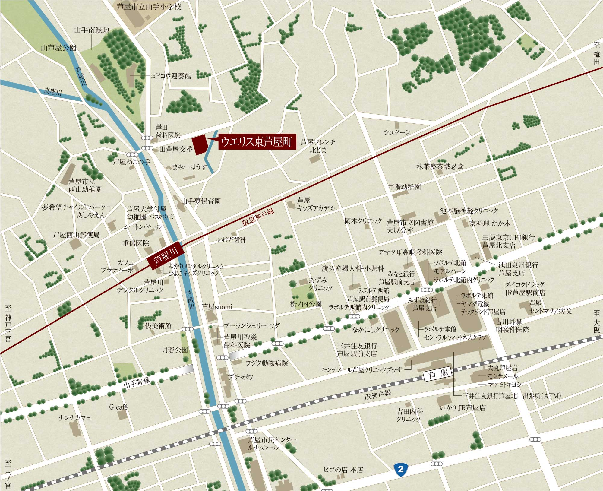

<ons-page id="location" ng-controller="LocationController">
    <ons-toolbar>
      <div class="left">
        <ons-toolbar-button ng-click="toggleMenu()"><ons-icon icon="fa-bars"></ons-icon></ons-toolbar-button>
      </div>
      <div class="center"></div>
    </ons-toolbar>
    <div class="wrap">
        
    </div>
</ons-page>